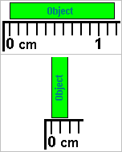

You may have tackled this at some point in high school -- the concept of significant digits.
On the right is an Object, being measured by a ruler. We can estimate its length at 1.18 cm, and its width as perhaps 0.19 cm. How much uncertainty do we attach to each measurement?
As we've seen before, there's a convention suggesting that the uncertainty in a measurement is about 1 or 2 tenths of the smallest increment (the smaller uncertainty being only under completely ideal conditions). So, let's say the uncertainty in each measurement here is 0.2 mm, which is 0.02 cm. That makes length L = 1.18 ± 0.02 cm, and width W = 0.19 ± 0.02 cm.
Keep these figures in mind as we calculate the area. There's a decision to be made here, about at what point the number of digits we keep, and which ones we can disregard.